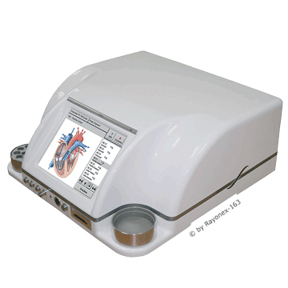
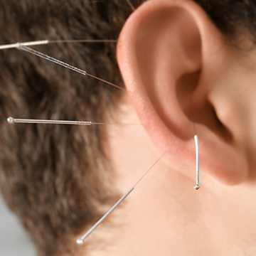
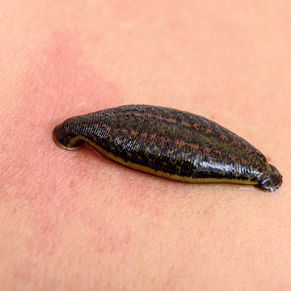
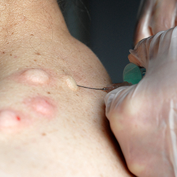
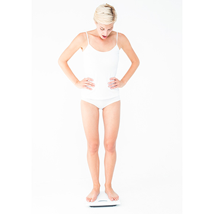

Zeit für einen Weg, der zu Ihnen passt.
Ich nehme mir Zeit für eine umfassende Anamnese, suche nach den Ursachen und stelle daraus einen Therapieplan zusammen, den wir gemeinsam besprechen.
Ausführliches Erstgespräch
Eine umfassende Anamnese steht am Anfang. Bitte nehmen Sie sich dafür ausreichend Zeit.
Hausbesuche möglich
Wenn der Weg in die Praxis schwerfällt, komme ich bei Bedarf auch zu Ihnen.
Auch für kleine Patienten
Kinder brauchen besondere Aufmerksamkeit und Geduld – dafür plane ich mehr Zeit ein.
Zehn Therapien, ein Ansatz
Die Ursachensuche steht vor der Therapie. Welches Verfahren zum Einsatz kommt, entscheiden wir gemeinsam nach dem Erstgespräch.
-

Bioresonanz
Nach Paul Schmidt – mein größter Schwerpunkt.
Mehr erfahren → -
Infusionstherapie
Mikronährstoffe direkt über die Vene.
Mehr erfahren → -

Ohrakupunktur
Behandlung über Reflexpunkte am Ohr.
Mehr erfahren → -

Blutegel
Traditionelles Verfahren bei Schmerzen und Entzündungen.
Mehr erfahren → -
Eigenbluttherapie
Reiz für die körpereigene Abwehr.
Mehr erfahren → -

Quaddeln
Reiztherapie über Injektionen in die Haut.
Mehr erfahren → -
Schwermetallausleitung
Mit natürlichen Mitteln oder Chelat-Infusionen.
Mehr erfahren → -
Raucherentwöhnung
Unterstützung für den Anfang mit Fumarexin.
Mehr erfahren → -

Gewichtsreduktion
Medizinisch begleitet und individuell abgestimmt.
Mehr erfahren → -
Kleine Patienten
Behandlung von Kindern mit viel Geduld.
Mehr erfahren →
Es gibt immer wieder einen Weg zum Lachen hin
Auch in meinem Leben gab es Zeiten, in denen mir das Lebensgefühl und das Lachen aufgrund schwerer Krankheiten abhandengekommen waren. Aber es gab auch immer wieder einen Weg zum Lachen hin.
Mein Ziel ist es, Sie auf Ihrem Weg zu einem unbeschwerteren Leben zu begleiten und zu stärken. Dabei kann der Wunsch nach Heilung im Vordergrund stehen oder – etwa bei chronischen Erkrankungen – der Gewinn an Lebensqualität.
Vom ersten Anruf bis zum Therapieplan
-
Termin telefonisch vereinbaren
Termine vergebe ich nach telefonischer Absprache. Weil ich mir viel Zeit für meine Patienten nehme und auch Hausbesuche mache, erreichen Sie mich nicht immer sofort – sprechen Sie mir gern kurz auf den Anrufbeantworter, ich rufe zurück.
-
Erstgespräch und Anamnese
Bitte planen Sie ausreichend Zeit ein. Ich führe eine umfassende Anamnese durch und stelle die Ursachensuche vor die Therapie.
-
Therapieplan besprechen
Je nach Vorgeschichte und Ziel der Behandlung erstelle ich einen Therapieplan und bespreche ihn mit Ihnen.
-
Absagen bitte 24 Stunden vorher
Sollten Sie einmal verhindert sein, bitte ich um Absage bis spätestens 24 Stunden vor dem Termin.
Lassen Sie uns sprechen
Sie haben eine Frage oder möchten einen Termin vereinbaren? Rufen Sie mich an – oder hinterlassen Sie eine Nachricht auf dem Anrufbeantworter.
0201 946 11 946